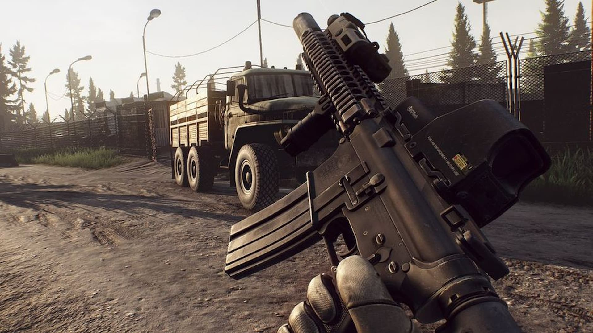

Gaming Background
Gaming is enjoyed by millions of people around the world. It provides entertainment, challenges, and opportunities to connect with others online. From competitive multiplayer games to creative sandbox worlds, gaming offers something for everyone. Communities are important because they support learning & collaboration.
Many gamers develop skills such as critical thinking, communication, and teamwork. Gaming can be a fun hobby, a way to relax, or even a professional path through streaming and esports competitions.
Gaming Skills
These are key skills that gaming can strengthen through practice and teamwork.
- Communication
- Teamwork
- Callouts during matches
- Coordinating roles
- Problem-solving
Media Examples

Note: Use headphones for the clearest audio quality.